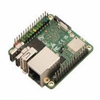
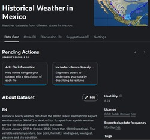
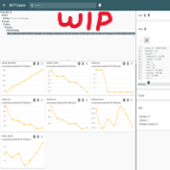
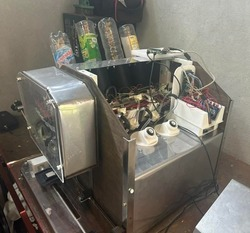
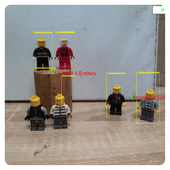

Jorge Conde
Mechatronics Engineer · Integration Tinkerer
I build things that sit at the edge of hardware and software. Mechatronics Engineering graduate from IPN, exchange at UPM Madrid. Currently looking for a first industry role in software, data, or IoT. I learn fast and I like understanding the full stack before touching anything.
about
I studied Mechatronics because it's the engineering degree that covers everything without going deep into any single area. That breadth is the point: you end up understanding the surrounding disciplines of whatever you're specializing in, which makes you harder to box in and faster to pick up new technologies. In practice that means I need the full picture before I touch anything. Not out of perfectionism, but because missing context is usually where things break. I've found that the most useful thing I can do on any project is understand what the adjacent systems are doing, even when they're not technically my problem.
Based in Nezahualcóyotl, CDMX. Graduate of IPN UPIITA, exchange at Universidad Politécnica de Madrid.
projects
Fully offline AI companion running on a resource-constrained Orange Pi Zero 2W. Speech-to-text via Whisper.cpp, LLM inference via llama.cpp, TTS via Piper. No cloud dependency by design. Full pipeline validated end-to-end on mock hardware with persistent state across power cycles.

EDA and predictive modeling on 98,000 hourly weather readings from Mexico City's main airport station (2017–2025). Trained and compared Linear Regression, Random Forest, ARIMA and LSTM. LSTM achieved RMSE of 1.67°F, a 44% improvement over ARIMA. Shipped as a modular Python pipeline with Power BI dashboard.

Distributed IoT weather data platform integrating an ESP32 sensor network (I2C) with a Raspberry Pi MQTT pipeline. Hardware schematics, firmware and assembly docs are publicly available as a community resource. Sensor station fully operational; server-side pipeline under active development.

Multi-agent AI system built with Google ADK. Four specialized sub-agents handle data collection, geocoding, risk evaluation and report generation. Delivers structured environmental risk reports with actionable recommendations. Submitted as Google AI Agents Capstone.
Full-stack thesis project: custom electronics, Arduino Mega talking to a Raspberry Pi via UART, Python Flask backend, web frontend for ordering and a real-time monitoring dashboard. Remote access via Cloudflare Tunnel. Minimum 5% dosing error across 40 test cycles with full fault traceability through server logs.

Person localization and crowd density analysis. Original version used a custom Haar Cascade classifier and a Winner-Takes-All clustering network in MATLAB. Rebuilt with YOLOv8s for real-time detection, zone-based counting and Gaussian heatmap visualization.

skills
languages
Python · C/C++ · SQL
MATLAB · JavaScript
HTML/CSS · Bash
ml / data
scikit-learn · TensorFlow
pandas · numpy
statsmodels · Power BI
OpenCV · YOLOv8
hardware / iot
ESP32 · Arduino
Raspberry SBCs
Radxa SBCs
MQTT · I2C · UART · SPI
PIC microcontrollers
tools / infra
Git · Docker
Flask · Linux
Cloudflare Tunnel
GitHub Actions
ai / agents
Google ADK · MCP
llama.cpp · Whisper.cpp
Piper TTS · HuggingFace
n8n · Zapier
cloud / certifications
Azure (AZ-900, AI-900)
Oracle OCI · Postman API
Google AI Agents
ISO 27001
contact